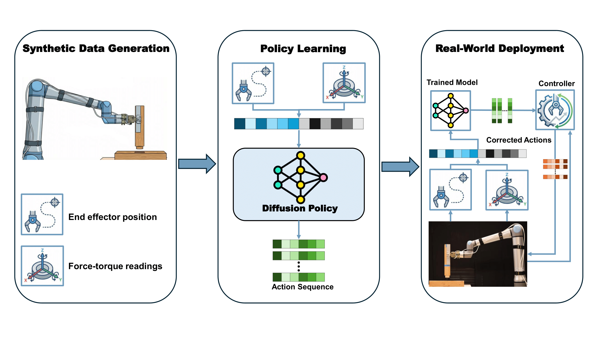

|
 |
We present a learning-based and adaptive control framework for contact-rich robotic assembly in construction, demonstrated through autonomous insertion of tenons into mortises using a UR20 industrial manipulator. An automated large-scale data collection pipeline in simulation generated 1,000 end-effector demonstrations of insertion from diverse initial poses toward a fixed target mortise location. A diffusion-policy model was trained on end-effector pose and force signals to learn smooth, compliant insertion behaviors directly from demonstration trajectories. To bridge the sim-to-real gap, we deploy an adaptive control layer that refines the policy's actions online using real-time force and end-effector measurements, compensating for unmodeled dynamics and physical variations in material contact. The resulting system achieves a 90% real-world insertion success rate without vision or external calibration, demonstrating robust alignment, insertion, and seating under natural variations in friction and contact geometry. This work illustrates how combining diffusion policies with adaptive correction enables practical, contact-rich robotic assembly for real-world construction applications.